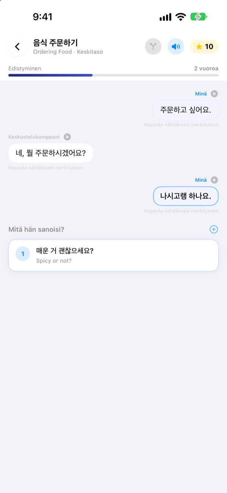
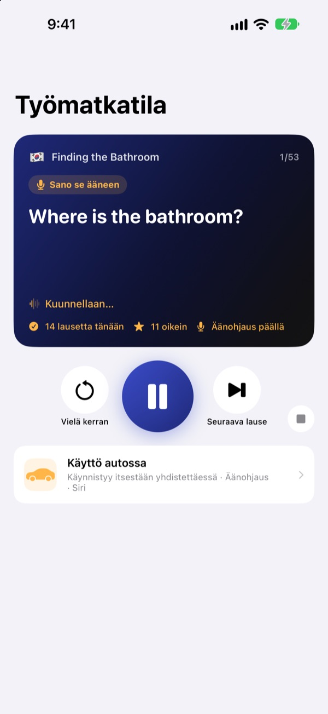
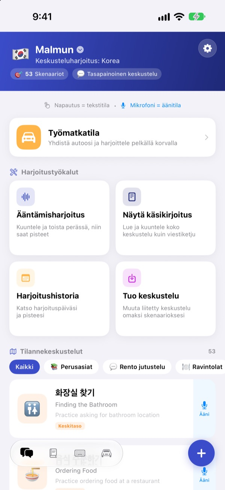
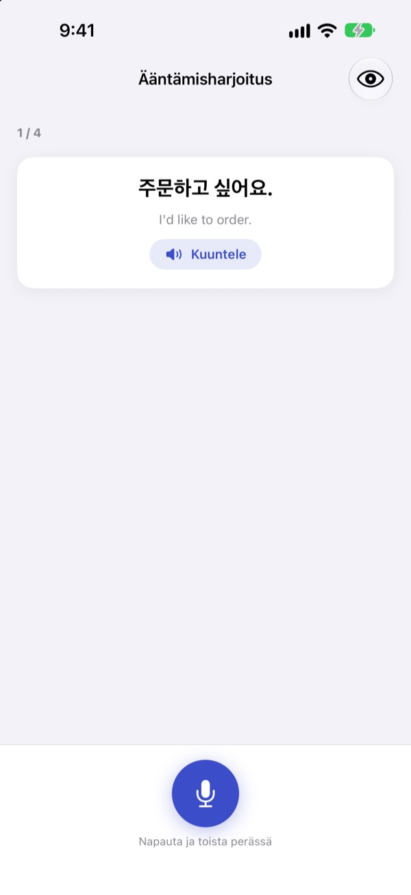

Ei enää jähmettymistä.
Aloita sinä.
Malmun on keskusteluvalmentaja, jossa jokainen valitsemasi vastaus vie dialogin eri suuntaan. Opi koreaa, japania, kiinaa, espanjaa tai indonesiaa, ja harjoittele autossa pelkillä korvilla ja äänellä.
Haarautuvat keskustelut, ääntämisharjoitus ja sanasto ovat ilmaisia.

Jatka keskustelua itse
Tämä on ”Hyvää huomenta”, indonesiankielinen keskustelu suoraan sovelluksesta. Jokainen valitsemasi lause vie keskustelun eri suuntaan.
Lause oli hallussa, mutta vastaus ei tullut?
Oppikirjassa keskustelut etenevät aina käsikirjoituksen mukaan. Oikeasti toinen vastaa jotain, mitä et odottanut. Malmunilla käyt keskustelun kaikki haarat läpi etukäteen, joten seuraava lause on valmiina, tuli mitä tuli. Jopa kotimatkasta tulee harjoitusaikaa.
Harjoittele kuuntelemalla ajon aikana
Työmatkatila soi auton kaiuttimista Bluetoothin tai CarPlayn kautta. Ensin kuulet merkityksen, äänimerkin jälkeen saat aikaa sanoa sen itse, ja lopuksi vastaus soi kerran hitaasti ja kerran normaalitahdissa.
Siirry ja kuuntele uudelleen ohjauspyörän painikkeilla, tai sano next, again tai slower, kun on vuorosi. Toisto pysähtyy navigaattorin opasteiden ajaksi.

Kaikki matkan ja arjen tilanteet
Jokaisessa kielessä on 53 tilannekeskustelua: perusteet, arkijutustelu, ravintola, liikkuminen, lentokenttä, hotelli, ostokset, nähtävyydet ja hätätilanteet.
Indonesian opiskelijalle on enemmän: 5 käsin kirjoitettua small talk -skenaariota, 3 kuuden kohtauksen päiväkurssia viikkoaikatauluineen ja 100 sanaa työmatkalle.

Tarkista, menikö se oikein
Ääntämisharjoitus antaa pisteet ja värittää sanat, jotka osuivat, ja ne, jotka jäivät.
Käsikirjoitusnäkymässä koko keskustelu on kuin chat. Kuuntele se kerralla tai piilota merkitykset ja testaa itseäsi.

Alkuun kolmessa vaiheessa
- 1
Valitse kieli
Napauta lippua alkunäkymän yläreunassa. Fraasit ja sanat tallentuvat kullekin kielelle erikseen.
- 2
Avaa keskustelu
Napauta vastauksia tekstitilassa, tai napauta mikrofonia ja puhu: äänitila löytää lähimmän vastauksen.
- 3
Autossa työmatkatila
Yhdistä iPhone autoon ja paina toistoa. Näyttöä ei tarvitse katsoa.
Työmatkatilan ohjaus
- Ohjauspyörä: seuraava kappale
- Seuraava lause
- Ohjauspyörä: edellinen kappale
- Sama lause uudelleen
- Toistopainike
- Tauko ja jatka
next·skip- Seuraava lause
again·repeat- Kuuntele uudelleen
slower·faster- Muuta lukunopeutta
next scene- Seuraavaan keskusteluun
stop·pause- Lopeta harjoitus
- Siri: ”Aloita työmatkaharjoitus sovelluksella Malmun”
- Aloita koskematta iPhoneen
Kun sovellus on suomeksi, puhekomennot sanotaan englanniksi. Ne kuunnellaan vain sinun vuorollasi äänimerkin jälkeen. Nykyinen lause näkyy auton toistotiedoissa. CarPlayssa ei ole omaa sovellusnäkymää.
Melkein kaikki on ilmaista. Malmun Pro avaa loput.
Ilmainen
- Haarautuva small talk ja päiväkurssit (indonesia)
- Tilannekeskustelut: perusteet ja arkijutustelu
- Työmatkatila, 3 kohtausta päivässä
- Ääntäminen, käsikirjoitus, keskustelujen tuonti, harjoitushistoria
- Omat fraasit, sanakortit, fraasinäppäimistö
- Skenaarioiden jakaminen ystäville, skenaariot tekoälyllä
Malmun Pro
- Kaikki tilannekeskustelut: ravintola, liikkuminen, lentokenttä, hotelli, ostokset, nähtävyydet, hätätilanteet
- Rajaton työmatkatila
- Koskee kaikkia kieliä
Vuositilaus tai kertaosto ikuisesti
Hinnat näet sovelluksessa ja App Storessa. Vuositilaus uusiutuu automaattisesti, ellei sitä peruta viimeistään 24 tuntia ennen kauden loppua.
Usein kysyttyä
Mitä kieliä voin opiskella?
Koreaa, japania, kiinaa, espanjaa ja indonesiaa. Painikkeet ja valikot ovat suomeksi, mutta lauseiden merkitykset ja puhekomennot ovat englanniksi. Siksi englanti itse ei ole listalla.
Miten käytän sitä autossa?
Yhdistä iPhone autoon Bluetoothilla tai CarPlaylla, avaa työmatkatila ja paina toistoa. Ääni tulee auton kaiuttimista, ja lause näkyy kohdassa Toistetaan nyt. Voit myös sanoa Sirille ”Aloita työmatkaharjoitus sovelluksella Malmun” tai tehdä kerran Pikakomennot-appiin automaation, joka käynnistyy, kun CarPlay (tai auton Bluetooth) yhdistyy.
Kuunteleeko mikrofoni koko ajan?
Ei. Se kuuntelee vain sinun vuorollasi äänimerkin jälkeen iPhonen mikrofonilla, ja kuultu käsitellään laitteella.
Ääntämistäni ei tunnisteta.
Puheentunnistus toimii opiskelemallasi kielellä. Kokeile hiljaisemmassa paikassa ja tarkista, että kielen puheentunnistus on ladattu laitteelle.
Miten lisään näppäimistön?
Avaa Asetukset ▸ Yleiset ▸ Näppäimistö ▸ Näppäimistöt ▸ Lisää uusi näppäimistö ja valitse Malmun-näppäimistö. Vaihda siihen kirjoittaessa maapallopainikkeella. Täyttä käyttöoikeutta ei tarvita. Jos haluat vähemmän fraaseja, napauta alkunäkymän oikean alakulman näppäimistökuvaketta ▸ Hallitse näppäimistöä.
En näe ystävän jakamaa skenaariota.
Jakaminen toimii iCloudin kautta, joten teidän molempien on oltava kirjautuneena iCloudiin. Jos se ei vieläkään näy, sulje sovellus kokonaan ja avaa se uudelleen.
Mitä tarvitsen skenaarioiden tekemiseen tekoälyllä?
Lisää sovellukseen oma Anthropic-API-avaimesi ja kirjoita aihe, niin uusi keskustelu syntyy. Kaikki muu toimii ilman avainta.
Miten peruutan tilauksen tai saan rahat takaisin?
Maksut hoitaa Apple. Peruuta iPhonen Asetukset ▸ Apple-tili ▸ Tilaukset ▸ Malmun. Hyvitystä pyydät Applelta osoitteessa reportaproblem.apple.com.
Uusi iPhone, ja Pro katosi.
Kirjaudu samalla Apple-tilillä ja napauta Malmunissa Asetukset ▸ Malmun Pro ▸ Palauta ostokset.
Mihin edistymiseni tallennetaan?
Tiliä ei tarvita. Tiedot pysyvät laitteellasi ja omassa iCloudissasi. Ei mainoksia eikä seurantaa, vain nimetöntä käyttötilastoa ja virheraportteja. Bugeista ja toiveista voi kertoa myös GitHub Issuesissa (github.com/M1zz/IndonesianSmallTalk/issues).
Kysyttävää tai palautetta? Kirjoita osoitteeseen leeo@kakao.com, käytä sovelluksen kohtaa Asetukset ▸ Lähetä palautetta tai löydä meidät Instagramista: @lee25_ios.